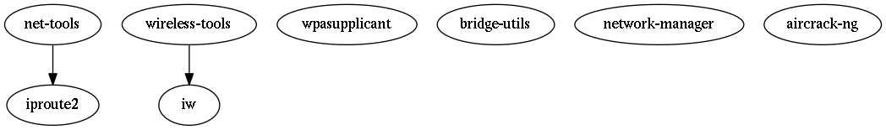

2.3. Kali Networking¶
2.3.1. Kali default networking¶
2.3.1.1. Kali laptop - eth0 + wlan0¶
Let’s start with a “typical” pentest laptop running Kali with:
eth0: a wired interface (eth0) which is currently activewlan0: built-in wireless interface
2.3.1.2. Kali laptop networking after boot¶
There are 2 services controlling networking: networking and the GUI-driven NetworkManager. The interfaces defined in /etc/network/interfaces are managed by networking and the others are managed by NetworkManager. A default install has networking only controlling lo (the loopback interface); NetworkManager controlls both the eth* and wlan* interfaces, but leaves the wlan* disconnected since there are no connections defined in /etc/NetworkManager/system-connections/. Since NetworkManager by default runs dhclient to get eth0’s IP, it will update /etc/resolv.conf.
Here’s a command line display of a Kali laptop running with both eth0 and wlan0 connected (so wlan0 has been connected to a SSID after install):
hacker@kali:~$ # Some commands need root
hacker@kali:~$ SUDO=$(which sudo)
hacker@kali:~$ [[ "$USER" == "root" ]] && SUDO=
hacker@kali:~$
hacker@kali:~$ # networking exited (only lo), NetworkManager still active
hacker@kali:~$ systemctl status networking NetworkManager
* networking.service - Raise network interfaces
Loaded: loaded (/lib/systemd/system/networking.service; enabled; vendor prese
Active: active (exited) since Fri 2017-09-15 11:41:46 PDT; 56min ago
Docs: man:interfaces(5)
Main PID: 333 (code=exited, status=0/SUCCESS)
Tasks: 0 (limit: 4915)
CGroup: /system.slice/networking.service
* NetworkManager.service - Network Manager
Loaded: loaded (/lib/systemd/system/NetworkManager.service; enabled; vendor p
Active: active (running) since Fri 2017-09-15 11:41:46 PDT; 56min ago
Docs: man:NetworkManager(8)
Main PID: 404 (NetworkManager)
Tasks: 5 (limit: 4915)
CGroup: /system.slice/NetworkManager.service
├─404 /usr/sbin/NetworkManager --no-daemon
├─575 /sbin/dhclient -d -q -sf /usr/lib/NetworkManager/nm-dhcp-helper
└─583 /sbin/dhclient -d -q -sf /usr/lib/NetworkManager/nm-dhcp-helper
lines 1-18/18 (END)
hacker@kali:~$
hacker@kali:~$ # Read relevant man pages
hacker@kali:~$ man 5 interfaces
hacker@kali:~$ man 8 NetworkManager
hacker@kali:~$
hacker@kali:~$
hacker@kali:~$ # Show the network interfaces
hacker@kali:~$ # lo UNKNOWN/DEFAULT
hacker@kali:~$ # eth0 UP/DEFAULT
hacker@kali:~$ # wlan0 UP/DORMANT
hacker@kali:~$ ip link show
1: lo: <LOOPBACK,UP,LOWER_UP> mtu 65536 qdisc noqueue state UNKNOWN mode DEFAULT group default
link/loopback 00:00:00:00:00:00 brd 00:00:00:00:00:00
2: eth0: <BROADCAST,MULTICAST,UP,LOWER_UP> mtu 1500 qdisc pfifo_fast state UP mode DEFAULT group default qlen 1000
link/ether 54:a0:50:a9:93:f6 brd ff:ff:ff:ff:ff:ff
3: wlan0: <NO-CARRIER,BROADCAST,MULTICAST,UP> mtu 1500 qdisc mq state DOWN mode DORMANT group default qlen 1000
link/ether dc:85:de:bd:51:03 brd ff:ff:ff:ff:ff:ff
hacker@kali:~$
hacker@kali:~$
hacker@kali:~$
hacker@kali:~$ # Show only lo, eth0 have an address
hacker@kali:~$ ip addr show
1: lo: <LOOPBACK,UP,LOWER_UP> mtu 65536 qdisc noqueue state UNKNOWN mode DEFAULT group default qlen 1000
link/loopback 00:00:00:00:00:00 brd 00:00:00:00:00:00
2: eth0: <BROADCAST,MULTICAST,UP,LOWER_UP> mtu 1500 qdisc pfifo_fast state UP mode DEFAULT group default qlen 1000
link/ether 54:a0:50:a9:93:f6 brd ff:ff:ff:ff:ff:ff
3: wlan0: <BROADCAST,MULTICAST,UP,LOWER_UP> mtu 1500 qdisc noqueue state UP mode DORMANT group default qlen 1000
link/ether dc:85:de:bd:51:03 brd ff:ff:ff:ff:ff:ff
hacker@kali:~$
hacker@kali:~$
hacker@kali:~$
hacker@kali:~$ # show iw command thinks wlan0 is managed
hacker@kali:~$ /sbin/iw dev
phy#0
Interface wlan0
ifindex 3
wdev 0x1
addr dc:85:de:bd:51:03
type managed
channel 6 (2437 MHz), width: 20 MHz, center1: 2437 MHz
txpower 15.00 dBm
hacker@kali:~$
hacker@kali:~$
hacker@kali:~$
hacker@kali:~$ # Show /etc/network/interfaces manages lo
hacker@kali:~$ cat /etc/network/interfaces
# This file describes the network interfaces available on your system
# and how to activate them. For more information, see interfaces(5).
source /etc/network/interfaces.d/*
# The loopback network interface
auto lo
iface lo inet loopback
hacker@kali:~$ ls /etc/network/interfaces.d/
hacker@kali:~$
hacker@kali:~$
hacker@kali:~$
hacker@kali:~$ # Verify that network-manager handles the rest
hacker@kali:~$ nmcli dev status
DEVICE TYPE STATE CONNECTION
eth0 ethernet connected Wired connection 1
wlan0 wifi connected bitbender
lo loopback unmanaged --
hacker@kali:~$ # So we see network-manager manages eth0, wlan0
hacker@kali:~$
hacker@kali:~$
hacker@kali:~$
hacker@kali:~$ # Finally, show /etc/resolv.conf set up by NetworkManager
hacker@kali:~$ cat /etc/resolv.conf
# Generated by NetworkManager
search bitbender.org
nameserver 192.168.1.1
nameserver 2605:e000:9382:4f00::1
nameserver 192.168.2.1
# NOTE: the libc resolver may not support more than 3 nameservers.
# The nameservers listed below may not be recognized.
nameserver 2605:e000:9382:4f01::1
2.3.1.3. Move wireless from NetworkManager to networking¶
There are times when we need to run wireless without NetworkManager, an example being mana which stops NetworkManager. So we’ll let networking handle wlan0 by adding it to /etc/network/interfaces. See How to use a WiFi interface - WPA-PSK and WPA2-PSK for this setup:
# Some commands need root
SUDO=$(which sudo)
[[ "$USER" == "root" ]] && SUDO=
NI=/etc/network/interfaces
WLAN=wlan0
# Generate 64 digit hex preshared key
SSID=MYSSID
PW="PASSWORD"
PSK="$(wpa_passphrase $SSID "$PW" | grep '[[:space:]]psk=' | sed -e 's/.*psk=//')"
# Add WLAN to interfaces if needed
if [[ "$(grep -c $WLAN $NI)" == "0" ]]; then
$SUDO mv $NI $NI.orig
$SUDO cp $NI.orig $NI
$SUDO chmod 600 $NI
cat <<EOF | $SUDO tee -a $NI
auto $WLAN
iface $WLAN inet dhcp
wpa-ssid $SSID
wpa-psk $PSK
# wep would use
# wireless-essid SSID
# wireless-key PSK
EOF
fi
# After the above network-manager should be stopped or restarted
$SUDO systemctl stop NetworkManager
# $SUDO systemctl restart networking
# In some cases you want to disable NetworkManager
# $SUDO systemctl disable NetworkManager
# $SUDO pkill nm-applet
# Now start WLAN
$SUDO ifup $WLAN
The resulting /etc/network/interfaces is:
hacker@kali:~$ $SUDO cat /etc/network/interfaces
# This file describes the network interfaces available on your system
# and how to activate them. For more information, see interfaces(5).
source /etc/network/interfaces.d/*
# The loopback network interface
auto lo
iface lo inet loopback
auto wlan0
iface wlan0 inet dhcp
wpa-ssid SSID
wpa-psk feedbeeffeedbeeffeedbeeffeedbeeffeedbeeffeedbeeffeedbeeffeedbeef
# wep would use
# wireless-essid SSID
# wireless-key PSK
For wireless command line see Connect to WiFi network from command line in Linux - Summary. Scroll up in the article to see the details of the summary. They didn’t use the deprecated iwconfig once!
root@kali:~# iw dev
root@kali:~# ip link set wlan0 up
root@kali:~# iw wlan0 scan
root@kali:~# SSID=ssid
root@kali:~# PASSWORD=passphrase
root@kali:~# wpa_passphrase $SSID $PASSWORD >> /etc/wpa_supplicant.conf
root@kali:~# wpa_supplicant -i wlan0 -c /etc/wpa_supplicant.conf
root@kali:~# iw wlan0 link
root@kali:~# dhclient wlan0
root@kali:~# ping 8.8.8.8
root@kali:~# # Add routing manually
root@kali:~# ip route add default via 10.0.0.138 dev wlan0
Also see wireless on the command line. For iw command replacements for the deprecated iwconfig (and more), see Wireless network configuration - Manual setup. For one example, to scan for access points: $SUDO iw dev wlan0 scan | grep SSID.
To undo the changes and revert back to NetworkManager:
# Some commands need root
SUDO=$(which sudo)
[[ "$USER" == "root" ]] && SUDO=
NI=/etc/network/interfaces
WLAN=wlan0
$SUDO ifdown $WLAN
$SUDO mv $NI.orig $NI
$SUDO systemctl restart networking
$SUDO systemctl restart NetworkManager
2.3.2. Major Networking Packages¶
Here are the major basic network packages with links going from deprecated to replacement packages.
Yes, net-tools (arp, ifconfig, netstat, route, …) and wireless-tools (iwconfig, iwlist, iwspy, …) are deprecated. See Deprecated Linux networking commands and their replacements to learn the newer alternatives. For the deprecation, Linux Foundation’s net-tools states “Please keep in mind that most net-tools programs are obsolete now” and from net-tools must die:
Luk Claes and me, as the current maintainers of net-tools, we’ve been thinking about it’s future. Net-tools has been a core part of Debian and any other linux based distro for many years, but it’s showing its age.
It doesnt support many of the modern features of the linux kernel, the interface is far from optimal and difficult to use in automatisation, and also, it hasn’t got much love in the last years.
On the other side, the iproute suite, introduced around the 2.2 kernel line, has both a much better and consistent interface, is more powerful, and is almost ten years old, so nobody would say it’s untested.
Hence, our plans are to replace net-tools completely with iproute, maybe leading the route for other distributions to follow. Of course, most people and tools use and remember the venerable old interface, so the first step would be to write wrappers, trying to be compatible with net-tools.
From Deprecated Linux networking commands and their replacements:
| DEPRECATED | REPLACEMENT |
|---|---|
| arp | ip neighbor |
| ifconfig | ip addr, ip link, ip -stats |
| iptunnel | ip tunnel |
| iwconfig | iw |
| nameif | ip link, ifrename |
| netstat | ss, ip route, ip -s link, ip mdaddr |
| route | ip route |
2.3.3. Commands in Major Network Packages¶
To see the commands provided by the major network packages:
PACKAGES="network-manager iproute2 net-tools iw wireless-tools \
wpasupplicant bridge-utils aircrack-ng"
for PKG in $PACKAGES; do
echo " ********************"
echo " $PKG executables"
echo " ********************"
dpkg -L $PKG | grep bin/
done